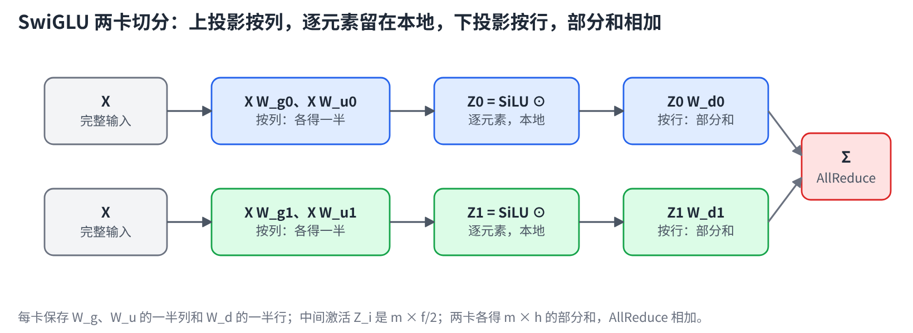
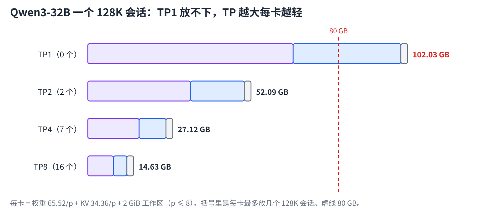
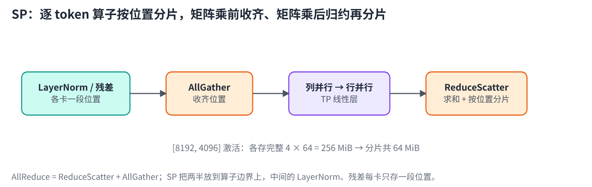
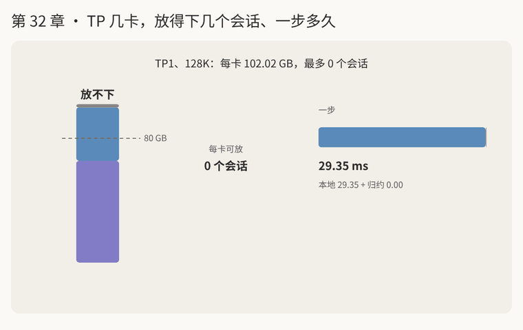

第 32 章 · 数据、张量、序列并行：复制模型、切矩阵、切激活
本地运行
git clone https://github.com/wikieden/ai-infra-from-constraints
cd ai-infra-from-constraints/code/notebooks
pip install jupyterlab torch numpy
jupyter lab ch32_dp_tp_sp.ipynb也可以下载后直接用 VS Code 打开 .ipynb 运行。需要 GPU 的章节在 Colab 里选「代码执行程序 → 更改运行时类型 → GPU」。
本章回答：同一个矩阵乘，按列切和按行切有什么不同，哪种要相加？Qwen3-32B 一个 128K 会话为什么单卡放不下？TP 卡数翻倍时，什么条件下还能变快？序列并行省的是什么？
讲解日期：2026-11-24 · 上一章：第 31 章 从单卡到多卡 · 下一章：第 33 章 上下文、流水线、专家并行
对应原文：materials/ai-infra-book/manuscripts/06-超节点.md§6.2.1–§6.2.3 L125–L266（式 6-3 到 6-6，图 6-4 到 6-10）
本章缩写：AllReduce / AllGather / ReduceScatter = 全归约 / 全收集 / 归约后分散 · GQA = Grouped-Query Attention（分组 / 查询 / 注意力）· YaRN = Yet another RoPE extensioN（又一种 RoPE 外推方法）。全部缩写见 缩写与术语表
讲解
第一步：DP：复制模型，切样本（2026-11-24）
类比：开分店。 每家分店有全套菜谱（完整模型），各自接待自己的客人；推理时分店之间不用商量。训练时就像每家分店各试一批新菜，最后要把各家的意见汇总，再统一改菜谱。
原文 L131–L141：推理的 DP 就是多部署几个实例。训练的 DP：两卡各处理 4 个样本得到平均梯度 \(g_0, g_1\)，八个样本的平均梯度是 \((g_0 + g_1)/2\)：两卡各算一半再汇合，等价于一卡算全部。
一句话：DP 提高吞吐，不缩短单个请求，也解决不了单卡放不下。
第二步：TP：按列切拼接，按行切相加（2026-11-24）
类比：两个人算账。 一种分法是各算不同科目的总数，最后并排抄在一起（按列切）；另一种是各算同一科目的一半单据，最后要把两人的小计加起来（按行切）。
最小例子（原文 L178–L188）：\(x = [2, 3]\)，\(W = \begin{bmatrix}1 & 4\\2 & 5\end{bmatrix}\)，\(xW = [8, 23]\)。
| 切法 | 卡 0 | 卡 1 | 合并 |
|---|---|---|---|
| 按列（切输出特征） | 第一列 → 8 | 第二列 → 23 | 拼接 [8, 23] |
| 按行（切输入特征） | \(2 \times [1, 4] = [2, 8]\) | \(3 \times [2, 5] = [6, 15]\) | 相加 [8, 23] |
SwiGLU 首尾相接（原文 L190–L211，式 6-3）：上投影 \(W_g, W_u\) 按列切（每卡得到中间维的一半），SiLU 和逐元素乘留在本地，下投影 \(W_d\) 按行切：
两个乘积都是完整形状 \(m \times h\) 的部分和，必须相加。需要完整结果用 AllReduce；下一个算子能接受分片就用 ReduceScatter；从分片恢复完整用 AllGather。注意力按头切也一样：输出投影后得到部分和。Qwen3-32B 每层两次（注意力 + FFN），64 层共 128 次 AllReduce。

图 32-1 · 两步都保留全部 m 个 token，切的是每个 token 的特征维。
例题（原文 L213–L215）：Qwen3-32B，\(h = 5120\)、\(f = 25600\)，TP4 每卡三矩阵 187.5 MiB（原来 750 MiB），单 token 读取 234.8 → 58.7 μs，代价是 4 卡各自 10 KiB 部分和要相加。
头是最小单位（原文 L219）：Qwen3-32B 有 8 个 KV 头，TP8 时每卡一个；TP16 时两卡共用一个 KV 头、各存一份。TP 卡数超过 KV 头数，再加卡就开始复制 KV。
场景代码：PyTorch 的 DTensor 用 ColwiseParallel / RowwiseParallel 描述同一种切法（真实 API）：
from torch.distributed.device_mesh import init_device_mesh
from torch.distributed.tensor.parallel import ColwiseParallel, RowwiseParallel, parallelize_module
mesh = init_device_mesh("cuda", (4,))
parallelize_module(model.mlp, mesh, {
"gate_proj": ColwiseParallel(), "up_proj": ColwiseParallel(), # 按列：各得中间维的一段
"down_proj": RowwiseParallel(), # 按行：部分和，内部做 AllReduce
})
补基础：DTensor 与 TP 见《PyTorch 从里到外》第 20 章。
一句话：切输出维的结果拼接，切归约维的结果相加；SwiGLU 先列后行，每层只在最后加一次。
第三步：长上下文把稠密模型逼到多卡，TP 多少卡还划算（2026-11-24）
类比：搬一架钢琴。 一个人抬不动（放不下）就必须叫人；叫两个人快了一大截，叫八个人还快一点，但每个人要喊口令（同步），人越多喊口令占的时间比例越大。
容量先排除单卡（原文 L151）：Qwen3-32B 权重 65.52 GB，每 token KV \(2 \times 64 \times 8 \times 128 \times 2 = 256\) KiB，一个 128K 会话 34.36 GB：
| TP | 每卡（一个会话） | 每卡最多会话 |
|---|---|---|
| 1 | 102.03 GB（> 80） | 0 |
| 2 | 52.09 GB | 2 |
| 4 | 27.12 GB | 7 |
| 8 | 14.63 GB | 16 |
注意力设计比稠密 / MoE 更决定状态（原文 L153–L174）：同规模的 Qwen3-30B-A3B（MoE，GQA）每 token KV 96 KiB；Qwen3.6-35B-A3B（40 层里只有 10 层完整注意力）只有 20 KiB。一个 128K 请求：34.36 / 12.88 / 2.75 GB；一张 H100 能放 0 / 1 / 3 个。batch 64 时 MoE 的权重读取回到 60–68 GB（专家几乎都被选中），但状态读取差十倍。
一步的时间（原文 L223–L251，式 6-4、6-5）：
\(s = 131064\) 时 98.32 GB，按 3350 GB/s 读完 29.35 ms（计算只要 0.34 ms，读取限制）。TP \(p\) 卡：
\(p\) 越大右边越小，每次归约多一点点时间，累积起来就抵掉省下的本地时间（第 35 章代入环形算法：TP2 / 4 / 8 = 14.89 / 7.97 / 5.15 ms）。

图 32-2 · TP1 连一个会话都放不下；卡越多每卡越轻，本地时间按 1/p 下降。
二维切分（原文 L253）：16 张卡做 \([8192, 4096] \times [4096, 12288]\)，每卡起初 4 MiB 输入、6 MiB 权重。r × c 网格横向收集同行输入、纵向收集同列权重：4×4 是 12 / 18 MiB，2×8 是 28 / 6，8×2 是 4 / 42；两方向等速时取较大者，4×4 最快。
一句话：长上下文先用容量排除 TP1；之后每次翻倍的收益是 \(T_{\mathrm{local}}/(2p)\)，要大于 128 次归约多出的时间才划算。
第四步：SP：把逐 token 算子的激活也切开（2026-11-24）
类比：流水线上的质检。 每个零件各检各的（逐 token），没必要每个质检员手里都拿一整箱；分到每人一段就行，到了需要整箱的工序再收齐。
原文 L257–L265：LayerNorm、Dropout、残差相加只依赖本 token。SP 让 TP 组内每张卡只处理一段位置：
- 进入列并行线性层前 AllGather 收齐位置；
- 行并行线性层出来 ReduceScatter：一边求和一边按位置重新分片。
AllReduce = ReduceScatter + AllGather，SP 只是把两半挪到不同的算子边界上，中间的逐 token 算子就不用每卡存一份完整激活。\([8192, 4096]\) BF16 激活 64 MiB：四卡各存完整共 256 MiB，按位置分片共 64 MiB。

图 32-3 · 只在保持分片的区间省内存，权重和其他激活不变。
一句话：SP 在 TP 组内用同一批卡，把 AllReduce 拆成两半放到算子边界，省的是逐 token 区间的激活。
动画演示：TP 几卡，放得下几个会话、一步多久

可交互版：animations/32-dp-tp-sp.html（切换：TP 1 / 2 / 4 / 8；上下文 32K / 128K）。
怎么看：
- 左边一根竖条是每卡内存：权重、一个会话的 KV、工作区，虚线是 80 GB（第三步）；
- 中间显示每卡最多放几个会话；
- 右边是一步的时间：本地读取（随 1/p）+ 128 次归约（第 35 章的环形算法）；
- 播放时 128K 下 TP1（放不下）→ 2 → 4 → 8，再切到 32K 看 TP1。
练习与作答记录
题 1（第二步）：\(x = [1, 2, 3]\)，\(W\) 是 3×2 的 \(\begin{bmatrix}1&0\\2&1\\0&3\end{bmatrix}\)。三张卡按行切，各自的部分和是什么？相加后是多少？
作答记录：（待作答）
题 2（第三步）：Qwen3-32B，64K 上下文（每会话 KV 是 128K 的一半）。TP1、TP2、TP4 每卡各能放几个会话（每卡留 2 GiB 工作区）？
作答记录：（待作答）
题 3（第三步）：一个模型 \(T_{\mathrm{local}} = 20\) ms，每步 96 次 AllReduce。TP4 → TP8 时每次归约多 4 μs。翻倍还划算吗？省多少？
作答记录：（待作答）
原书实验 6-2（L348：六个权重分片的形状、四种 TP 的本地时间、流水时序）。想多练可以做。
口诀
分店各接各的客，训练才要汇意见；
分科目并排抄，分单据小计相加；
抬钢琴人少抬不动，人多喊口令；KV 头分完再加人就是复制；
质检各检各的，要整箱时再收齐。
本章复习卡片
I122（按列拼接 vs 按行相加、SwiGLU 先列后行、128 次 AllReduce）、I123（Qwen3-32B 128K 容量与 \(T(p)\)、翻倍条件）、I124（SP = 把 AllReduce 拆成 AllGather + ReduceScatter 放到边界）。练习做完后，按答错、卡住的地方再补。
附录 · 延伸阅读
留给以后深入学习用，不影响本章主线。★ 是建议先读的。
推荐阅读
| 读什么 | 读哪里 | 读它为了什么 |
|---|---|---|
| ★ AII 第 6 章 | §6.2.1–§6.2.3 L125–L266 | 本章原文 |
| ★ Shoeybi 等，Megatron-LM（2019） | §3 | 列 / 行切分的出处 |
| Korthikanti 等，Reducing Activation Recomputation（2022） | §4 | SP 的定义 |
| 补充 · TP、PP、CP | TP 部分 | 本书图解 |
| 《PyTorch 从里到外》第 20 章 | DTensor、TP | 实际写法 |
数学原理
- 分块矩阵乘：\([Z_0\ Z_1]\begin{bmatrix}W_0\\W_1\end{bmatrix} = Z_0 W_0 + Z_1 W_1\)。
- AllReduce = ReduceScatter + AllGather。
- 边际收益递减：\(T_{\mathrm{local}}/p\) 的增量 \(T_{\mathrm{local}}/(2p)\) 随 \(p\) 减小。
公式清单
| 公式 | 意思 |
|---|---|
| \(Y = Z_0 W_{d,0} + Z_1 W_{d,1}\) | 式 (6-3) |
| \(V(s) = 64 \cdot 930\,\text{MiB} + 256\,\text{KiB}(s+1) + 151936 \cdot 5120 \cdot 2\) | 式 (6-4) |
| \(T(p) = T_{\mathrm{local}}/p + 128\,T_{\mathrm{AR}}(p)\) | 式 (6-5) |
| \(128[T_{\mathrm{AR}}(2p) - T_{\mathrm{AR}}(p)] < T_{\mathrm{local}}/(2p)\) | 式 (6-6) |
代码对照：把本章的数字用代码算一遍
代码
ai-infra/solutions/chapter-code/ch32_dp_tp_sp.py，测试tests/test_ch32.py：
bash cd ai-infra/solutions/chapter-code uv run python ch32_dp_tp_sp.py uv run pytest tests/test_ch32.py
| 讲义 | 写法 | 跑出来 |
|---|---|---|
| 第二步 两种切法 | col_split、row_split |
[8, 23] |
| 第三步 容量 | sessions_fit(p) |
2 / 7 / 16 |
| 第三步 一步 | step_bytes(131064) |
98.32 GB，29.35 ms |
| 第三步 网格 | grid_send_mib(r, c) |
12 / 18、28 / 6、4 / 42 |
代码里才看得到的 3 件事：
sessions_fit只对 \(p \le 8\) 成立：超过 8 卡 KV 不再按 \(1/p\) 下降（KV 头只有 8 个）。- 式 (6-4) 的 \(s + 1\)：这一步要写入一个新 token 的 KV，再读整份。
- 输出投影 151936 × 5120 × 2 ≈ 1.56 GB，单独一项，比一层还大。
自己改一改（不影响练习答案）：
- 给
sessions_fit加 \(p > 8\) 的 KV 复制规则，算 TP16 每卡能放几个。 - 把
step_bytes改成 Qwen3-30B-A3B（48 层、4 个 KV 头），比较同样 128K 的读取。 - 让
grid_send_mib接受 32 张卡，找最快的网格形状。